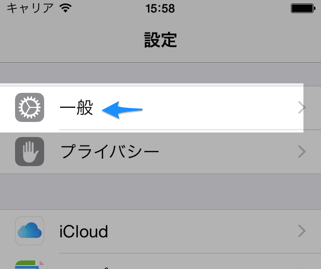
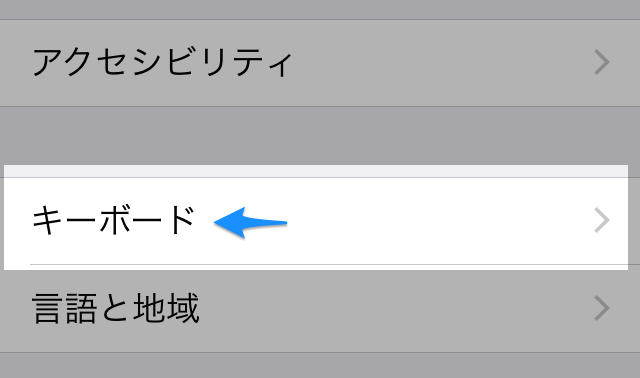
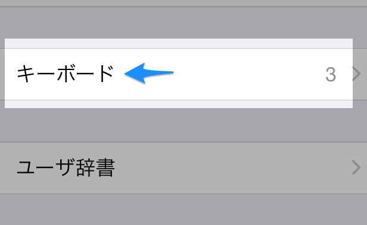
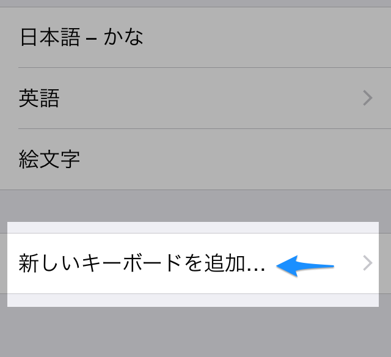
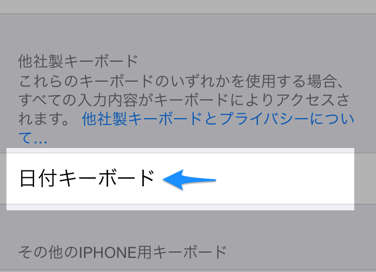
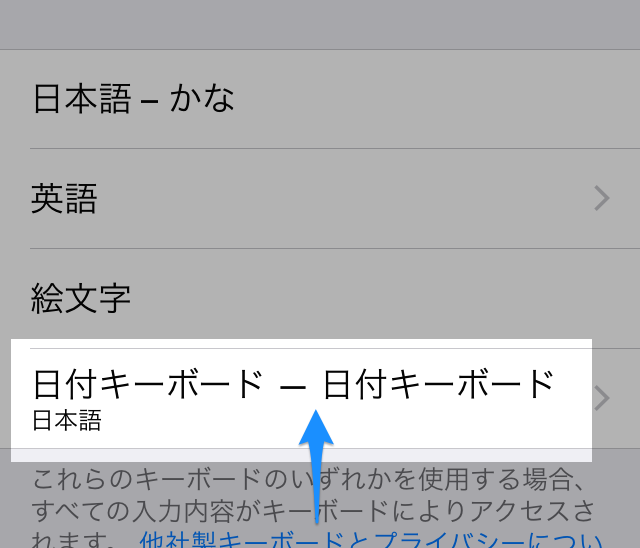
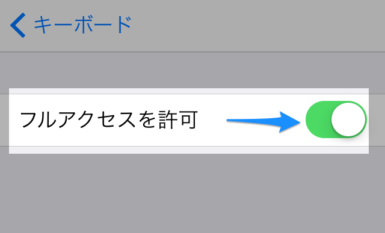
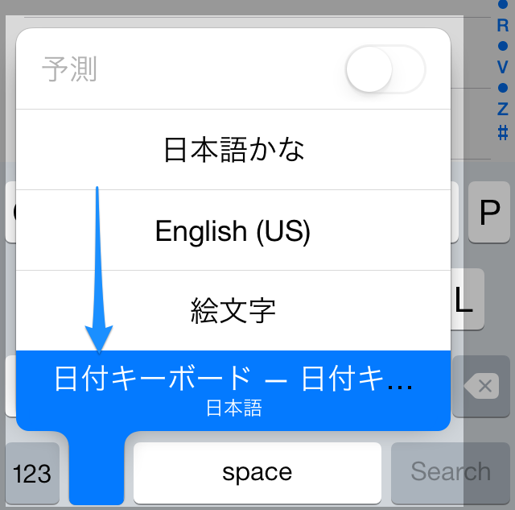

まず、設定アプリを開きます。
次に、一般→キーボード→新しいキーボードを追加...を開きます。
 →  →  → 
キーボードの一覧が表示されるので、日付キーボードを選んでください。

自動的に一つ前の画面に戻るので、新しく追加された日付キーボード - 日付キーボードを開いてください。

フルアクセスを許可にチェックを入れてください。
(フルアクセスを許可しない場合、日付の変更をすることができません。このキーボードは、あなたの入力したデータを収集するような行為は一切行いませんが、不安がある方はこのキーボードの使用を中止してください。)

これで、キーボード切り替え画面に日付キーボードが登録されました。

お疲れさまです！